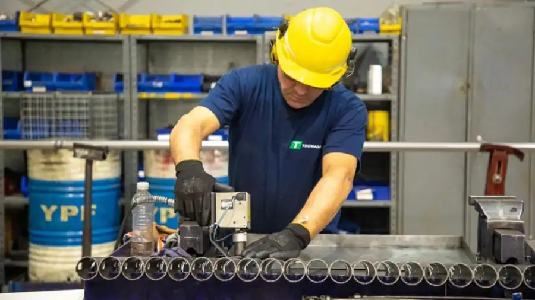
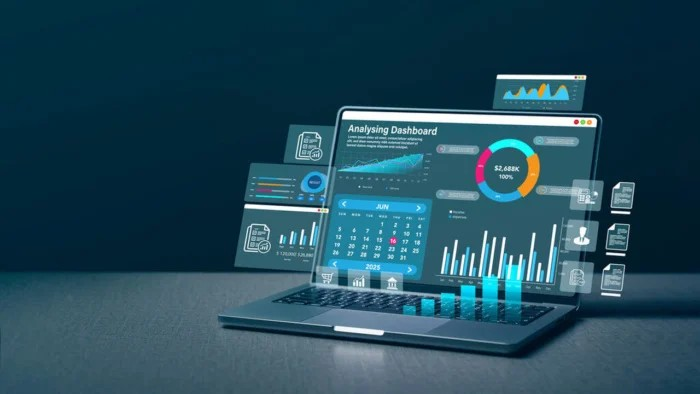

Impulso Comercial Basado en Datos y Ejecución Real
Acompaño a pymes y minipymes a ordenar, optimizar y escalar sus resultados mediante modelos comerciales,
inteligencia de negocios aplicada y continuidad operativa.
Sobre Mí
Soy consultor especializado en desarrollo comercial, inteligencia de negocios y continuidad operativa.
Mi propuesta se basa en:
Enfoque ejecutivo y orientado a resultados.
Herramientas propias listas para operar.
Integración directa con equipos comerciales y operativos.
Modelos flexibles según la realidad del cliente.
Visión y Misión

Visión
Ser un socio estratégico para las pymes y minipymes de Chile.
Misión
Acompañar a pymes y minipymes en su proceso de profesionalización comercial.
Modelos simples y medibles.
Dashboards ejecutivos.
Acompañamiento cercano.
Propósito
Impulsar el crecimiento sostenible de las pymes y minipymes.
Servicios Profesionales
A. Optimización Comercial y Forecasting
Diseño de modelos comerciales.
Forecast de ventas y control de KPIs.
Optimización de cartera y segmentación.
Implementación del POS Comercial.
Acompañamiento ejecutivo.
B. Inteligencia Comercial y BI Aplicado
Dashboards ejecutivos.
Modelos de datos comerciales.
Integración de fuentes.
Capacitación en BI.
C. Continuidad Operativa Comercial
Ordenamiento comercial completo.
KPIs y estructura.
Dashboard para gerencias.
Gerente comercial externo.
Herramientas Propias

Demo de la Herramienta Analytics
POS Comercial
Modelo de gestión que ordena la operación comercial y mejora la ejecución.
Herramienta Analytics
Dashboard ejecutivo que integra ventas, inventarios, rotación y forecast.